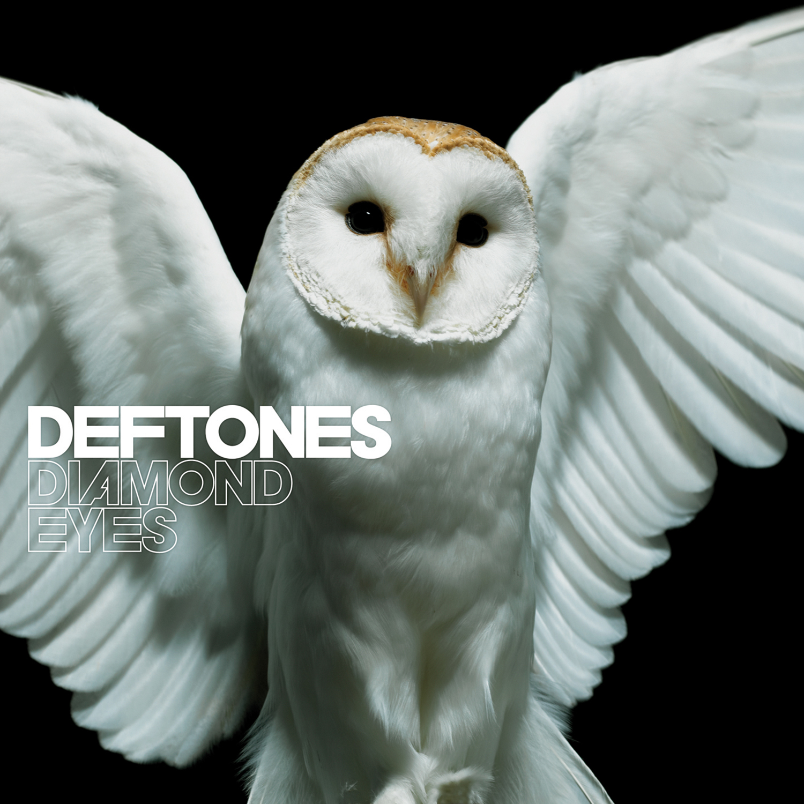

Deftones para mim foi uma banda muito recente, porém em pouco tempo se tornou minha favorita com sua habilidade de ter músicas bem diferentes que ainda têm a essência da banda.


Deftones
Músicas
Algumas músicas da banda:
Be quiet and drive do álbum Around the fur
Beauty school do álbum Diamond eyes
Gauze do álbum Koi no yokan
Genesis do álbum Ohms
One weak do álbum Adrenaline
Kimdracula do álbum Saturday night wrist
Introdução
Deftones é uma banda de metal alternativo americana vinda de Sacramento, Califórnia, formada em 1988 e que é composta atualmente por Chino Moreno (vocais e guitarra), Stephen Carpenter (guitarra), Sergio Vega (baixo), Frank Delgado (DJ e sintetizador), e Abe Cunningham (bateria e percussão). Chi Cheng era o baixista da formação original desde 1988, porém em 2008, ele ficou em coma devido a um acidente de carro, embora mostrasse uma lenta recuperação em seu tratamento, acabou morrendo em 2013 após uma parada cardíaca Cheng ficou 4 anos em coma.
História
O início (1988–1993)
Quando Carpenter tinha 15 anos de idade, ele foi atropelado por um carro enquanto andava de skate. Isto fez com que ficasse em uma cadeira de rodas por vários meses. A partir de então que começou a aprender guitarra sozinho tocando canções de bandas como Anthrax, Stormtroopers of Death e Metallica. O motorista indenizou Carpenter com um custo o qual ele pôde comprar os equipamentos para sua futura banda, Porém, o baterista Abe Cunningham comentou em uma entrevista que isto é "um mito de como a nossa banda começou"
Carpenter, Moreno e Cunningham frequentavam a mesma escola. Eles foram colegas de infância e se tornaram amigos por meio da cena de skateboard em Sacramento. Quando Moreno encontrou Carpenter tocando guitarra, ele resolveu improvisar em uma jam session com Cunningham e os três começaram a tocar frequentemente na garagem da casa de Carpenter em meados de 1988. Depois de tocarem com diversos baixistas, a banda escalou Justin Jaramillo (que foi reposto por Chi Cheng) e logo gravaram uma demo de 4 faixas. Dois anos depois da banda ter iniciado tocando em casas de shows, expandiu seu território com suas músicas à San Francisco e Los Angeles onde tocaram com bandas como Korn. A banda então impressionou um representante da Maverick Records. Eles logo assinaram contrato com a gravadora após terem mostrado três de suas canções para Freddy DeMann e Guy Oseary.
O nome "Deftones" foi criado por Carpenter que gostaria de pegar "algo que soasse bem, porém não enjoativo." Carpenter combinou uma gíria do hip-hop "def", o que era utilizado por artistas que ele escutava como LL Cool J e Public Enemy, com o sufixo "-tones", que era um sufixo de bandas bastante populares nos anos 50 que eram de de seu gosto (como Dick Dale and the Deltones; The Quin-Tones, The Monotones, The Cleftones e The Harptones). Carpenter disse que o nome é vago com a intenção de levar a refletir a tendência da banda de não se focar somente em um estilo musical.
(Like) Linus (1993)
(Like) Linus é uma demo tape que foi lançada independentemente pela própria banda no dia 30 de Novembro de 1993. O nome da demo faz referência ao criador da marca corporativa Linux, Linus Torvalds. As músicas "Engine No. 9", "Root" e "7 Words", foram regravadas para o seu primeiro álbum de estúdio, Adrenaline.
Adrenaline (1994–1996)
O álbum de estreia da banda, Adrenaline, foi gravado pelo Bad Animals Studio em Seattle, Washington e lançado em 3 de outubro de 1995. Foi produzido pela banda e por Terry Date, o qual iria produzir os próximos três álbuns da banda. Inicialmente não houve muita repercussão, mas turnês intensivas, marketing boca-a-boca e promoção na Internet fez com que a banda construíssse uma base sólida de admiradores, o que ajudou Adrenaline a vender cerca de 220,000 cópias sem contar com os singles "7 Words" e "Bored" (e seus respectivos videoclipes). A banda contribuiu com a canção que não se encontra em nenhum álbum "Teething" para a trilha sonora do filme de 1996 O Corvo: Cidade dos Anjos e também apresentaram a canção ao vivo em uma cena do filme. A canção do álbum "Engine No. 9" possuiu covers das bandas Korn e Suicide Silence.
O álbum passou 21 semanas na lista da Billboard Heatseekers na vigésima terceira colocação. Quando perguntaram pelo sucesso do álbum, Cheng respondeu, "Uma palavra: perseverança. Nós temos estado juntos por oito anos, dois de estrada e o que fazemos, fazemos com honestidade e integridade." O álbum foi certificado pela RIAA como Disco de ouro em 7 de julho de 1999 em consequencia das 500.000 de discos vendidos.
Enquanto gravavam o álbum, Abe Cunningham disse, "No momento que fizemos a primeira gravação - a qual eu realmente gostei e achei bom - você pode dizer que a banda era realmente jovem. Nós tocamos a maior parte daquelas canções por um breve momento, e nós estamos felizes por estarmos agora gravando e não pensavamos nem um pouco que faríamos canções melhores." Moreno sentiu que o Adrenaline foi gravado "muito rápido" e elaborou seus vocais na banda em um quarto usando um microfone Shure SM58. Uma resenha de Adrenaline admirou o controle musical, precisão e o "jeito de tocar bateria surpreende e sofisticadamente" de Cunningham. Foi também citado que "houve um pouco de mesmice no vocal suspirado de Chino Moreno o que decaiu um pouco."
Adrenaline foi considerado disco de platina em 23 de setembro de 2008 pela RIAA, ao reconhecer um milhão de discos vendidos.
Around the Fur (1997–1999)
O segundo álbum Around the Fur, foi gravado no Studio Litho em Seattle, Washington e produzido por Terry Date. Lançado em 26 de outubro de 1997, deve participação de Max Cavalera (das bandas Sepultura/Soulfly/Cavalera Conspiracy) em "Headup", em tributo ao enteado de Cavalera Dana Wells, a quem o álbum foi inteiramente dedicado. Embora não fosse ainda um membro da banda, Delgado é creditado como "áudio" em cinco faixas do álbum e a esposa de Cunningham, Annalynn, fez arranjos vocais em "MX". "Quando nós nos dispusemos a gravar este álbum, não fazíamos ideia do que realmente queríamos" disse Moreno em 1998 numa entrevista à revista Chart. Entretanto, ele sentiu que o álbum aos poucos foi se ajustando, uma vez que a banda se sentiu à vontade no estúdio. A banda expandiu seu som,passando mais tempo com Terry Date, e colocando mais ideias na produção do álbum. Cunningham variou o som de sua bateria e experimentou utilizar diferentes tipos de taróis em quase todas as faixas. O álbum foi aclamado pela alta e suave dinâmica musical, o fluir das canções, o vocal incomum de Moreno e o forte e ritmado groove criado por Cheng e Cunningham. Stephen Thomas Erlewine disse em uma construitiva crítica que "mesmo não possuindo riffs complexos ou um som totalmente desenvolvido, Around the Fur dá a entender que a banda estava prestes a encontrar o seu próprio eu."
O álbum levou a banda a ficar muito famosa no meio da cena alternativa devido ao extenso marketing pelas estações de rádios e aparições na MTV pelos videoclipes dos singles "My Own Summer (Shove It)" e "Be Quiet and Drive (Far Away)". Around the Fur vendeu 43.000 cópias na primeira semana de lançamento, entrando na Billboard 200 na vigésima nona posição por 17 semanas. A banda fez diversas turnês, fazendo aparições pela Warped Tour (nos Estados Unidos, Nova Zelândia e Austrália), Pinkpop Festival, Roskilde Festival e Ozzfest assim como lançaram um EP ao vivo em 22 de junho de 1999. Around the Fur recebeu o status pela RIAA de disco de ouro em 24 de junho de 1999. Um utilização notável de uma canção deste álbum foi "My Own Summer (Shove It)" na trilha sonora do filme de ficção-científica The Matrix.
White Pony (2000–2002)
Em 20 de junho de 2000, a banda lança seu terceiro álbum, White Pony, novamente produzido por Terry Date e pela banda. Foi gravado no The Plant Studios em Sausalito, Califórnia e no Larrabee Sound Studios, West Hollywood, Califórnia. O álbum tomou a terceira colocação na lista da US Billboard com vendas de 178.000 cópias. Delgado foi então, finalmente, considerado membro oficial da banda, adicionando novos elementos musicais nas canções.O álbum foi aclamado pela critica, além de ter sido um sucesso comercial, conseguindo disco de platina pela RIAA nos EUA, e disco de ouro no Reino Unido, Austrália e Canadá, sendo o álbum mais vendido da banda até o momento."Change (In the House of Flies)" foi um hit nas rádios de rock, atingindo a posição 3 na parada Alternative Songs e entrou na trilha sonora do filme A Rainha dos Condenados e Little Nicky.Sendo aclamado na critica, entrou em várias listas de melhores álbuns do ano e melhores da década de 2000. A melancólica "Teenager", por exemplo, foi uma radical ruptura no estilo comum da banda, uma " canção de amor" de acordo com Moreno, que incorporou elementos musicais como glitch e trip hop, com batidas eletrônicas fornecidas pelo amigo e colega de seu futuro projeto paralelo Team Sleep, o DJ John "Crook" Molina. No álbum há participações do vocalista Maynard James Keenan (das bandas Tool/A Perfect Circle) em "Passenger", da cantora Rodleen Getsic em "Knife Party" e de Scott Weiland no refrão da faixa "RX Queen". Moreno também, começou a contribuir como guitarrista em diversas faixas.
Uma entrevista da banda para a revista Alternative Press explicou o processo de gravação de White Pony. Depois de uma pausa da turnê, passou 4 meses em estúdio compondo e gravando para White Pony, o álbum que eles mais dedicaram tempo até então. Moreno explicou que a maior parte do tempo foi tentando compor, e que a letra de "Change (In the House of Flies)" foi o marco inicial que fez com que a banda trabalhasse como um grupo. Desprezando a pressão que era feita para lançarem logo o álbum, decidiram continuar no processo de construção do álbum. Cheng explica que "Nós são sentimos que tinhamos algo a perder, então gravamos como bem queríamos que fosse." Moreno não possui em mente um tema para as suas letras, porém fez uma decisão consciente para trazer um ambiente fantástico nelas, explicando que "Eu basicamente não cantei sobre mim neste álbum.Eu criei diversas histórias e alguns diálogos. Fiz questão de me retrair um pouco e escrever sobre outras coisas."
As críticas foram, no geral, positivas, citando a envolvente sofisticação de Moreno como letrista e o experimentalismo da banda, como um todo. Sobre White Pony, um crítico escreveu que "Deftones tornou-se um som leve, mas de um modo impressionante, mistura com agressividade semelhante ao estilo punk."
O álbum foi lançado originalmente com 11 faixas, iniciando com "Feiticeira" e terminando com "Pink Maggit" e sendo apresentado com um encarte cinza. Uma edição limitada impressa com 50,000 versões de capa preta e vermelha do White Pony foram lançadas ao mesmo tempo com uma faixa bônus intitulada "The Boy's Republic". Depois, a banda lançou "Back to School (Mini Maggit)", uma interpretação rapeada da canção final do álbum "Pink Maggit". A canção foi tomada como um single e colocada como faixa inicial (com "Pink Maggit" ainda como faixa final) de um relançamento de White Pony em 3 de outubro de 2000 apresentando um encarte branco. Não muito contente com o relançamento do álbum, a banda negociou para que "Back to School" fosse disponível para qualquer um baixasse livremente caso tivesse comprado a versão original. Chino disse que "Todo mundo que baixou nossas gravações antes de serem lançadas, deve ter ficado como: 'Cara, por que estão pondo diversas versões numa única gravação?' [...] é o melhor jeito que nós podemos agora mandar essa canção, pra pessoas que adquiriram este álbum, de graça. E se quiserem comprar outra versão, legal."
White Pony vendeu cerca de 1,3 milhões de cópias nos Estados Unidos, e fez com que a banda ganhasse o Grammy Award de 2001 pela Melhor Performance de Metal pela canção "Elite", vencendo das consagradas bandas Iron Maiden, Marilyn Manson, Pantera e Slipknot.
Também foi bem sucedido no Brasil, rendendo uma apresentação da banda na terceira edição do festival Rock In Rio.
Deftones (2003–2005)
Deftones começou a trabalhar em seu quarto álbum sob o nome de Lovers. Considerando a direção do álbum, Cheng comentou que "Nós temos provado que podemos musicalmente seguir na direção que quisermos, e nós queremos fazer algo pesado neste [álbum]." Moreno se propôs a um intenso treinamento em seus vocais como precaução após ter danificado seriamente suas cordas vocais em uma turnê da banda em 2001. A banda transformou seu pequeno estúdio em Sacramento em um altamente equipado e gravaram a maior parte do álbum ali por um custo pouco significativo. A banda levou Terry Date para auxiliar, novamente, na produção, e também recebeu arranjos musicais de Greg Wells em diversas faixas do álbum. A banda depois encrementou com um novo material no Studio X em Seattle, Washington e no Larrabee Studios em West Hollywood, Califórnia. No total, o álbum levou cerca de 12 meses para ser criado e possuiu um custo de $2,5 milhões para Maverick Records, a qual considerou esse tempo fora do prazo estimado por ela.
Em janeiro de 2003, Deftones deixou o estúdio para uma "trégua" participando em shows na Austrália e Nova Zelândia como parte do festival anual Big Day Out. Após isso, a banda retornou aos estúdios para finalizar seu quarto álbum. O auto-intitulado Deftones foi lançado em 20 de maio de 2003. Deftones entrou na Billboard 200 em segundo lugar e vendeu cerca de 167,000 cópias na sua primeira semana de estreia. O álbum permaneceu na Billboard top 100 por nove semanas, devido ao seu primeiro single, "Minerva". A banda gravou um vídeo para o seu segundo single, "Hexagram", com fãs observando a banda tocando a canção em um skateparte em Simi Valley, Califórnia. A banda elaborou um vídeo para a faixa "Bloody Cape", porém nunca foi lançado para ser exposto na televisão. O vídeo foi somente disponível no site oficial da banda por um só dia, porém foi lançado no DVD que acompanharia a futura compilação B-Sides & Rarities.
Geralmente, as críticas foram positivas, exaltando pela progressão deste álbum, considerado um dos mais "pesados", fora a sua originialidade em meio ao declínio de criatividade que se encontra no metal contemporâneo. Moreno fez um breve comentário dizendo, "Está tudo nessa gravação. Nós falamos a esses desgraçados não nos rotularem como nu metal, pois quando essa moda acabar e esse tipo de banda decair, nós não iremos junto com elas." Ao criar uma resenha para Deftones, Stephen Thomas Erlewine escreveu que "Hexagram", a faixa inicial, "soa pesado — mais do que já tinham feito — revelando que bandas como Staind e Linkin Park são leves e ineficazes,".
A banda lançou uma compilação com o título de B-Sides & Rarities em 4 de Outubro de 2005. O CD inclui vários b-sides e covers ao longo de sua carreira, enquanto o DVD contém cenas "por trás das câmeras" e a videografia completa da banda até aquele momento.
Saturday Night Wrist (2006–2007)
Quinto álbum da banda, Saturday Night Wrist foi lançado em 31 de Outubro de 2006. Permaneceu com o décimo na US Billboard chart com vendas por volta de 76,000, uma significativa diminuição das vendas da primeira semana de estreia em relação aos seus álbuns anteriores.
Depois de ter trabalhado com o produtor de longa data Terry Date, Deftones decidiu produzir o álbum com Bob Ezrin. Cunningham disse que enquanto o grupo se divertia ao trabalahar com Date, "Nestes tempos, precisamos mudar várias coisas [...] e este é defitivamente um estilo diferente. Trabalhar com ele [Ezrin] está ferrando tudo. Ele está querendo controlar tudo." Após gravarem toda a parte instrumental para a gravação, Chino Moreno decidiu gravar seus vocais separadamente. Chino então, terminou a gravação com o guitarrita da banda Far, Shaun Lopez como produtor. Como colaboração na gravação incluíram Annie Hardy da banda Giant Drag na canção "Pink Cellphone" e Serj Tankian do System of a Down na faixa "Mein".
O primeiro single da banda foi chamado “Hole in the Earth,” estreando nas rádios em 16 de Outubro de 2006. “Hole in the Earth” também apareceu para download para PS3 & Xbox 360 , como parte do jogo Guitar Hero 3. “Mein” foi o segundo single, que foi ao ar na primavera de 2007.
Até Março 2007, Saturday Night Wrist vendeu cerca de 250,000 cópias, nos Estados Unidos.
Deftones passou a maior parte de 2006 e 2007 fazendo turnês ao redor no mundo para divulgação do álbum. A banda fez shows em vários lugares incluindo América do Norte, Canadá, Europa, América do Sul, Japão e Austrália. A banda também participou em outras turnês como Taste of Chaos, Family Values Tour e the Soundwave Festival na Austrália.
Eros e o acidente com Chi Cheng (2008–2009)
Deftones trabalhou então no seu sexto álbum de estúdio Eros, compondo desde o outono de 2007. Chino Moreno descreveu o álbum como estranho, não-ortodoxo, apresentando uma atmosfera "viajante", mas ainda possuindo certa agressividade "destruidora". Inicialmente gravado em 14 de Abril de 2008; o álbum seria inicialmente lançado no início de 2009, mas foi atrasado para outubro de 2009. Entretanto, em 23 de junho de 2009, Deftones anunciou em seu site oficial que “Eros” terá data indeterminada para lançamento, dizendo "... quando estávamos para concluir Eros, decidimos que esta gravação não corresponde e representa o que somos atualmente como pessoas e como músicos. E, embora estas canções sejam mostradas e divulgadas futuramente, nós decidimos que precisamos de um outro desenvolvimento, e a condição atual de Chi faz pesar a nossa mente. Decidimos voltar ao estúdio e fazer algo que correspondia com algo que estavamos sentindo artisticamente.”. Falaram também “A decisão de não lançarmos logo o Eros não possui relação alguma com a condição de Chi ou algo do tipo. Isto foi, e é, uma decisão puramente criativa da banda para escrever, gravar, e lançar algo incrível.”
Em 4 de novembro de 2008, o baixista Chi Cheng foi envolvido seriamente em um acidente de carro em Santa Clara (Califórnia). Em razão dos danos causados pelo acidente, Cheng permanece em coma semiconsciente e a família tem recebido ajuda da banda e dos fãs.. Após o ocorrido, os colegas de banda de Cheng e a sua mãe, Jeanne, começaram a utilizar o blog da banda para postar notícias sobre a condição de Chi.
Em 9 de dezembro de 2008, foi anunciado que Chi havia sido movido para o tratamento em um hospital especialista em tratar danos cerebrais traumáticos e não-traumáticos.
Em janeiro de 2009, a banda anunciou que "nosso camarada ainda não fez um progresso significativo", e que o amigo da banda Sergio Vega (da banda Quicksand) estaria na banda durante a ausência de Chi, como foi feita anteriormente em 1998. Em 5 de abril, a banda tocou pela primeira vez sem Cheng (desde 1998) no festival Bamboozle Left in Irvine, Califórnia. Em maio de 2009, foi revelado que Chi Cheng não estava mais em tratamento intensivo.
Deftones tocou em alguns shows na Europa em meados de 2009, em shows em Amsterdã e Reino Unido, como Reading and Leeds Festivals.
Seus amigos de longa data Brian "Head" Welch, Reginald "Fieldy" Arvizu (da banda Korn), com alguns membros das bandas Sevendust, Slipknot, e várias outras recentemente gravaram e lançaram uma canção em homenagem a Chi, junto com doações feitas em favor de Chi e sua família. A canção é intitulada A Song for Chi.
Em outubro de 2009, segundo o site oficial do Deftones, a banda se juntou com a banda Slipknot em algumas datas fazendo turnê em parte do Canadá bem como em algumas cidades dos Estados Unidos durante o mês de novembro. Também foram selecionados para o Smokeout festival na Califórnia junto com Cypress Hill e outras bandas.
Para arrecadar fundos para ajudar Chi e sua familía, a banda anunciou dois shows beneficentes em Los Angeles nos dias 19 e 20 de novembro. No dia 19, o show foi iniciado pelas bandas P.O.D., Far e Cypress Hill. O Deftones fez então várias performances ao lado de amigos e parceiros de outras bandas como Tommy Lee, Mark McGrath do Sugar Ray, Greg Puciato do The Dillinger Escape Plan, Mike Shinoda do Linkin Park, Xzibit, e membros do Cypress Hill, Far, Incubus, Phallucy e Team Sleep. A vocalista Rodleen Getsic também se uniu a Deftones para fazer uma outra performance da canção "Knife Party" que ela havia participado durante a gravação do álbum "White Pony". A performance da segunda noite incluiu uma segunda aparição de Puciato e contribuições de membros da banda Suicidal Tendencies Mike Muir e Mike Clark, os ex-membros da Suicidal Tendencies (e baixista da banda Metallica) Rob Trujillo e Rocky George, Dave Lombardo do Slayer, Alexi Laiho do Children of Bodom, e os membros do System of a Down: Daron Malakian, John Dolmayan, e Shavo Odadjian.
Como dito no site Revolvermag.com Deftones estão planejando em 18 de maio de 2010, lançar o seu novo álbum Diamond Eyes, já que a banda decidiu não lançar o álbum já gravado "Eros", mas que será mostrado, de alguma forma, em um futuro próximo.
Diamond Eyes (2010–2011)
O sexto álbum dos Deftones, Diamond Eyes, foi lançado no dia 4 de maio de 2010.O álbum foi produzido por Nick Raskulinecz ( que já trabalhou com Foo Fighters, Ash, Trivium, Stone Sour, Danzig, Velvet Revolver, Shadows Fall, Marilyn Manson, Rush, Coheed and Cambria)
Do álbum saíram 4 singles bem sucedidos: Rocket Skates, Diamond Eyes, Sextape e You've seen the Butcher. O clipe do primeiro single teve constante exibição na MTV Americana, além do segundo single, Diamond Eyes teve bastante aparição nas rádios, atingindo a posição 16 na Alternative Songs da Billboard, posição 10 na tabela Hot Mainstream rock tracks e posição 14 na Rock songs. O clipe de Sextape e You've seen the Butcher também tiveram aparição na MTV, além de You've seen the Butcher atingir a posição 30 na rock songs e 17 na Hot Mainstream rock tracks.
O álbum atingiu a posição 6 da Billboard 200 e posição 8 da German Albums Chart, vendendo 62,000 cópias nos Estados Unidos em sua primeira semana, sendo mais bem sucedido que seu Antecessor, Saturday Night Wrist, sendo o mais bem sucedido álbum da banda desde o seu quarto álbum Deftones.
Diamond Eyes teve criticas positivas, sendo dito por Stephen Thomas Erlewine como: Acima de tudo, é um álbum maduro: Deftones contornou a resposta óbvia para sua tragédia, percebendo que a vire à esquerda é uma viagem mais gratificante.E também dito que tem um som que é uma mistura de Metal Alternativo e rock experimental diferente dos outros álbuns da banda, com riffs de guitarra, toques de bateria e vocais melhor elaborados."
Enfim, o álbum Diamond Eyes mostra o amadurecimento da banda e uma boa resposta da banda para o acidente de Chi Cheng, diferente de outras bandas que caem com acidentes ou morte de algum integrante e ainda o álbum recebeu uma boa resposta do público e de crítica.
Em 2012 a banda saiu em uma turnê com o System of a Down.
Koi No Yokan e a morte de Chi (2012–2013)
Em 29 de março de 2012, uma entrevista com Stephen Carpenter foi postado no YouTube pelo canal da ESP Guitars. Nele, Carpenter fala sobre sua mudança para 7 e 8 cordas de guitarra.No final, ele diz: "Musicalmente, eu e minha banda, Deftones, estamos trabalhando em um novo álbum e esperamos tê-lo terminado no Verão de 2012, e quando o novo registro for feito nós vamos começar um outro ciclo de turnê e tocar o nosso material para aqueles que estão interessados ??". Chino Moreno também afirmou que não tem semelhança com seu recorde de 2000, White Pony, quando comparado ao seu trabalho anterior. "Os cantos são muito diferentes umas das outras, não mais pesado ou mais lento, mas mais dinâmica, indo para diversos sentidos, é pesado, mas bonito." Além disso, tem sido relatado que Nick Raskulinecz voltará a produzir o álbum.
Em 3 de abril de 2012, após a realização no Rock Quilmes 2012 festival, Chino foi entrevistado sobre o projeto Crosses e o novo álbum do Deftones.Ele disse que o processo de escrita foi concluído na semana passada e eles começam a gravar após ele voltar da América do Sul. "Começamos a gravar na próxima semana.Eu estou tão animado sobre isso, porque Deftones, obviamente, é a minha vida, eu fiz uma carreira desde que eu tinha 15 anos de idade e para a direita antes de eu vir na semana passada, terminei todo o processo de escrita, na próxima semana, quando eu voltar, nós começamos a gravar. Devemos ter um registro que sai no início do outono, talvez outubro. Em 23 de abril de 2012, foi anunciado que a banda estaria em turnê com o System of a Down a partir de 02 de agosto, na Filadélfia e termina em 15 de agosto, em Chicago.
Também foi afirmado que a banda vai gravar vários b-sides para o álbum, que incluirá um cover de Elvis Presley, possivelmente, um cover do Earth, Wind and Fire.Em 28 de julho, Deftones realizada uma nova canção intitulada "Rosemary" e também estreou outra faixa intitulada "Roller Derby" (que mais tarde revelou ser intitulada "Poltergeist"). Em 30 de agosto de 2012, a banda anunciou via Facebook o título do seu próximo álbum de estúdio sétimo, Koi No Yokan, junto com uma turnê com o Scars on Broadway, começando 9 de outubro em Ventura, Califórnia. Koi No Yokan será lançado em 13 de novembro de 2012 nos Estados Unidos. Em 19 de setembro de 2012, a banda lançou seu primeiro single do álbum Koi No Yokan, "Leathers", através do seu site oficial como um download gratuito, além de anunciar o nome das faixas do álbum.
Em 13 de abril de 2013, às 3 horas da manhã, aproximadamente, depois de uma lenta progressão em seu tratamento, Chi Cheng morreu em um hospital após uma parada cardíaca repentina, depois de quase 4 anos e meio de seu acidente em 2008, o qual o deixou em coma.
Ohms (2020–)
No dia 20 de agosto de 2020, a banda, depois de uma tremenda e audiciosa campanha de marketing nas suas redes sociais, com enigmas, pistas e partes de letras, lança finalmente no Spotify o seu primeiro single do seu nono álbum de estúdio, de nome "Ohms", título que dá nome também ao primeiro single. Além de Spotify, também o single aparece pela primeira vez no iTunes e é ainda lançado um vídeo oficial no Youtube, dirigido pelos produtores Rafatoon e Clemente Ruiz. "Ohms" será oficialmente lançado no dia 25 de setembro de 2020 através da Reprise Records / Warner e contém dez faixas. A produção do disco teve mais uma vez a mão do talentoso produtor Terry Date.
Em 2022 após a banda colocar uma nova foto no Spotify onde não estava presente o baixista Sergio Vega, ele decide abandonar a banda, já que, segundo ele vem sendo prometido desde 2009 que seria efetivado como um membro da banda e isso nunca aconteceu.
Características
Com raízes no heavy metal, a banda sempre teve diversas influências, com seu estilo musical bem diferenciado ao longo de sua carreira. Sua compilação B Sides & Rarities inclui covers de seus artistas favoritos, passando pelo hard rock (Lynyrd Skynyrd), post-hardcore (Jawbox), metal alternativo (Helmet), rock gótico (Cocteau Twins e The Cure), new wave (Duran Duran), e misturas com R&B (Sade Adu) e hip-hop (Cypress Hill).
Críticos os tem exaltado com uma banda de estilo próprio no cenário do rock atual e com uma música de som bastante inovador e "viajante"; como Johnny Loftus escreve, "Os críticos de Rock reservam um lugar especial para Deftones em meio a diversas bandas no cenário do heavy metal nesta transição do século XX e XXI [....] Deftones se destaca por ter um som que desperta curiosidade e possuem vontade de incorporar diversos estilos musicais desde D.C. hardcore a dream pop em seu som alternativo."
As letras poéticas de Moreno são descritas por uma crítica da TIME magazine como "emoções um tanto quanto sugestivas" — também provocam uma "explosão" de vários sentimentos, bem como podem ser alvo de diversas interpretações. Moreno cita Morrissey, Rivers Cuomo (da banda Weezer), Robert Smith (do The Cure), H.R. (do Bad Brains), P.J. Harvey, e David Gahan (da Depeche Mode) como seus cantores favoritos, e, por um similaridade na técnica vocal, seus estilos de cantar ficam por apresentar bastante aparentes nos vocais de Moreno.
Integrantes
Atuais
- Chino Moreno – vocal, guitarra rítmica (1988–presente)
- Stephen Carpenter – guitarra solo (1988–presente)
- Frank Delgado – teclado, dj e sintetizador (1999–presente)
- Abe Cunningham – bateria (1988–1990, 1991–presente)
Ex-integrantes
- Dominic Garcia – baixo (1988–1990), bateria (1990–1991)
- John Taylor – bateria (1991–1993)
- Chi Cheng – baixo, vocais de apoio (1990–2008, falecido em 2013)
- Sergio Vega – baixo, vocais de apoio (2009–2022)